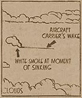

|
j
a v a s c r i p t |
October 18, 1944

Still can't see it?
The Air raid siren sounded at 0750. The whole front page of the Tribune is about Taiwan — half of the page shows a big picture of a "carrier sinking" (I can only see a ship's wake). So the propaganda continues unabated: Routed American force limps home ... U.S. Task Force nears total destruction ... London says U.S. strategy upset. 1005: Antiaircraft has opened up against American planes overhead. I stepped outside to witness four minutes of the best dive-bombing yet by 40 planes over Nichols and Nielson. Antiaircraft is heavy but off the mark. 1019: A piece of shrapnel bounced from the Burgos School's roof into Bachrach's White House, forcing me to duck! Some planes headed for Mariveles, others are now targeting the Bay. Where is Joe's ship? This time the Japanese were caught flat-footed. Their planes were up at 0800 but not when the Americans came; so much for the "radio detectors." At 1027 I definitely saw one damaged Japanese plane limp toward Camp Murphy; its motor conked-out as it passed in front of us though it might have made the field. Two American planes circled overhead then left toward the east chased by about 15 puffs way off the mark. 1040: All quiet save for two planes overhead and no antiaircraft. I ran out of candy during the raid (I don't smoke) so I had to dash out to get more Panchitos in the middle of it all.† Back to the Tribune: "Raiders repulsed; four planes downed" (three of them "probables") over Clark and Legaspi at 1030 yesterday. That explains yesterday's air raid siren. 1158: Dad just knocked on the gate as all hell broke loose — a second wave of American planes caught the Japanese off guard again. At 1200 sharp I saw a parachute descend toward Parañaque. It was all over in five minutes and quiet by ten. Four to six new medium Japanese bombers that landed at Nichols-Nielson yesterday were probably destroyed. By the time a couple of Japanese fighters rose from Murphy, the Americans were well on their way back. 1600: The barometer needle has now entered the Hurricane-At-A-Distance bracket — typhoon weather. At 1607 and 1618, antiaircraft barked as a couple of big bombs hit in the vicinity of the Port Area. We finally got the Alert at 1730 after being under the Air Raid signal for 9-1/2 uninterrupted hours. Those without news can judge by today's action — so much for the Japanese fleet chasing American "remnants." † Can't contain your excitement? — Ed. |
|
|
|
|